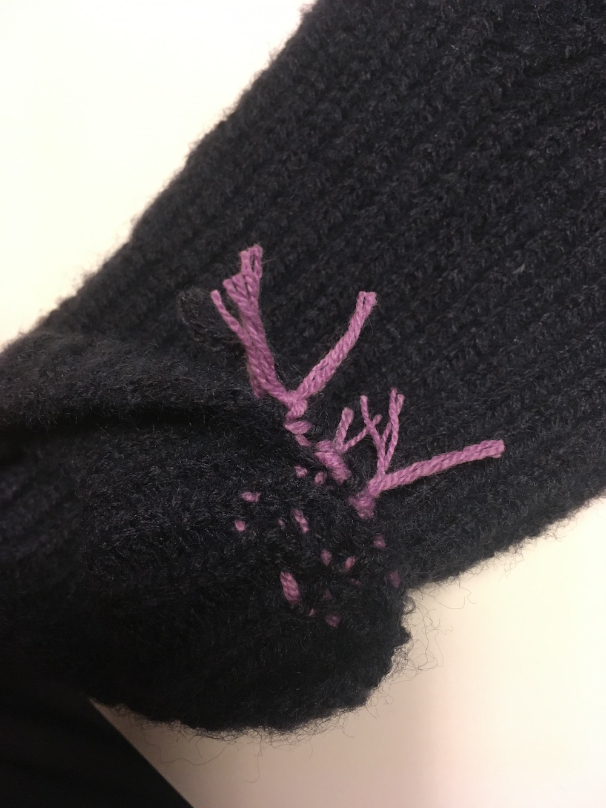

직장에 코바늘 뜨개질에 중독된 나의 상태가 소문이 나 있던 탓에, 동료 분이 올이 풀린 장갑을 수선해줄 수 있겠냐 의뢰해주셨다. 뭐든 일단 가능하다고 잘 말해버리는 탓에 인생 첫 뜨개 커미션을 맡게 됐다.
받고 나서 보니 나는 수선 경험도 없고 장갑은 대바늘로 뜬 것이었고 급하게 찾아본 유튜브 영상들의 깔끔한 빵꾸가 아니여서, 이걸 어떻게 채울 수 있을지 막막했다.
첫 번째 시도는 장갑 수선 영상에서 본 방법을 응용해서 새로운 실을 올이 풀린 곳에 채우고 돗바늘로 이리저리 수선해보는 것이었는데, 일단 잘 안됐다. 말끔히 빵꾸가 난 게 아니여서 새롭게 채우기가 꽤 머리 아팠다. 그리고 돗바늘을 다루는 게 힘들어서 짜증이 났다..
그래서 영상을 더 찾아보니 대바늘 코 수선은 뭔가 다른 도구를 사용하는 영상이 많았다. 근데 그 도구를 살 수는 없으니.. 그냥 코바늘로 올이 풀린 코를 다시 원래 자리로 돌려 놓는 방식을 택했다. 겉뜨기와 안뜨기가 번갈아 뜨인 장갑이라, 안팎으로 올이 나간 코들의 자리를 다시 잡아주니 꽤 그럴싸하게 원래 장갑 모양을 찾아갔다.
그러나 늘 그렇듯 마무리가 제일 짜증 나는 단계인데.. 깔끔하고 탄탄하게 하는 방법을 찾지 못해서 그냥 매듭을 짓고 이리저리 여분의 실을 숨겼다. 그래도 말끔한 마무리는 못됐지만.. 일단 이대로 마무리했다.
+ 장갑 수선에 대해 생각나는 것은 영화 〈윤희에게〉의 새봄 남친이 학교 운동장에서 버려진 장갑 하나를 주워서 요즘 수선이 취미라고 하는 장면이다. 그 장면이 떠오르는군.. 새봄 남친은 양 손이 다른 장갑을 끼고 새봄이를 만나러 간다.
++ 동료 분에게 수선 결과물을 드렸는데.. 다소 당황해 하셨지만 그래도 받아주심.. 감사하다..